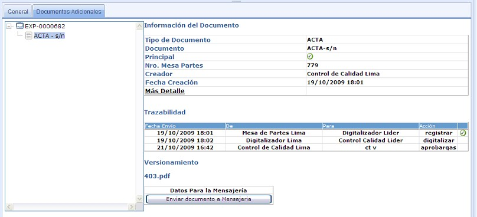
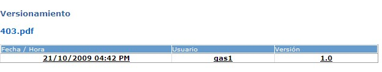

Documentos Adicionales
Pestaña Documentos Adicionales
Esta opción muestra los documentos asociados al expediente, en el cual podemos ver la información y trazabilidad de todos los documentos del expediente.

Para visualizar la información y trazabilidad de un documento se debe seleccionar el documento en el listado y la información será mostrada en la parte derecha de la pantalla. La información que se muestra es: tipo de documento, nombre del documento, si es documento principal o de trabajo, el número de mesa de partes, el creador del documento con la fecha de creación, adicionalmente tenemos la opción más detalles, donde se muestra información más detallada del documento.
En la parte inferior de la pantalla se visualiza la trazabilidad del documento. Aquí se muestra la fecha de envío, quien lo envío y el usuario que lo recepcionó, la acción que se tomó y los diversos estados del documento.
El versionamiento muestra las versiones del documento, además podemos visualizar el documento, como se muestra en la siguiente pantalla:

Si se desea enviar el documento seleccionado a mensajería, hacemos clic en el botón Enviar Documento A Mensajeria.
SISTEMA DE GESTION DOCUMENTARIA - OSINERGMIN